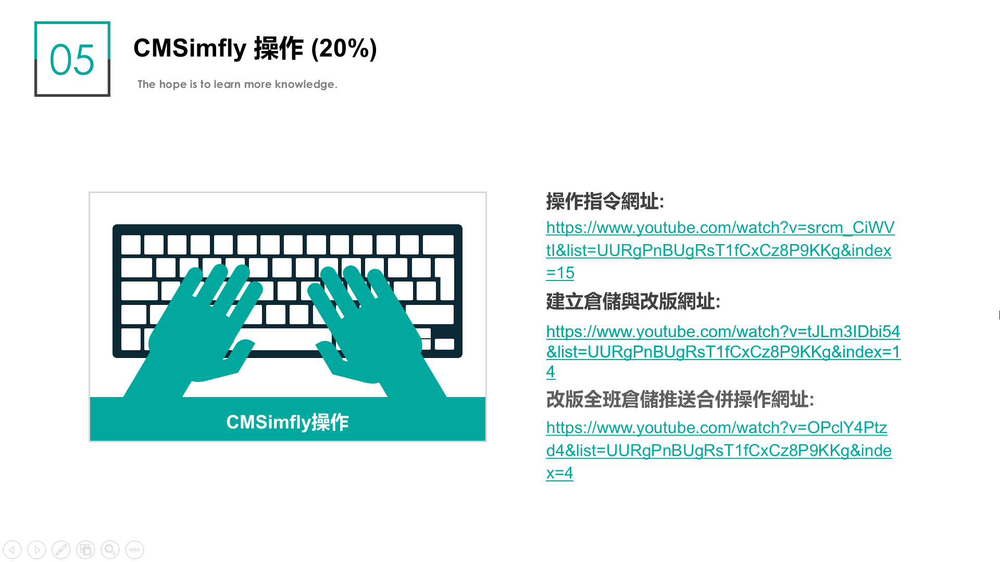

Html 原始碼 <<
Previous Next >> 進階挑戰
修正錯誤
期中問題
1.單機與網路差別
單機之資料庫只供本機使用，網路之資料庫為透過區域網路設定可供多人共用。
2.為什麼協同反而無法取得正確近端
因為協同後，需要pull request才能真正取得倉儲之近端，在指令馬中打git pull，即可將近端
遠端統合， 便可把資料push上去。
3.兩個人同時用近端並同時上傳檔案，但有合併衝突怎麼辦
先將.htm檔拖曳到SciTE文字編輯器，找出衝突點，並刪除頭(<<<<<<<)尾(>>>>>>>)與接 合處 (=======)後，儲存並重新進入近端，將之轉成Generapage，最後git add . gitcommit
git push。
4.為什麼倉儲會突然找不到網頁，但在遠端還可以看到
有可能是因為檔案中又包住另一個git clone 下來的資料，造成程式碼衝突，因而，使得變成404網頁。
* 處理方式:建議不要將檔案連續包夾在同一個資料夾裡面。
5.為什麼更改字型但是網頁爆掉
由於前後自行更改大小不一，因而造成網頁爆掉，需要到SciTE去刪除設定大小的前後(head3)
即可救回網頁。 P.S.建議不要隨便更改字型大小。
6.網頁爆掉如何救回
檢視問題點在哪行程式碼，將之移除，並重新檢視、送出，以下為指令:
Git log(查看從最近到最遠得提交日誌)
Git checkout 7碼(丟棄工作區文檔的修改)
Git status(查看當前git倉儲狀態)
Git diff (查看修改的文檔內容)
Git status(查看當前git倉儲狀態)
Git stash(將寫到一半的代碼從工作區拿走存起來)
Git status(查看當前git倉儲狀態)
期末問題
1.新版與舊版倉儲產生倉儲
將舊版倉儲一律改版成新版，在原先舊版資料檔中保存config目錄，之後將新版倉儲資料複製撇除git檔全部覆蓋後，重新進入近端推送變更資料後即可解決衝突問題。
補:假如沒有去做更新改版的動作，可能會導致資料推送不完整或是push不上去的問題。
可參考以下影片操作
2.資料推送不上去
可參考以下應片來解決，最有影響的部分可能在於近端遠端沒有做統一彙整成一樣的，導致資訊核對時產生錯誤，應使用git pull解決，之後再確認其他部分是否成立，並commit，即可解決此問題。
(圖為push產生問題範例)
3.組別倉儲在推送後其他組員也剛好在改版，因而產生版面衝突
在新版推送完畢後，組員使用舊版要推送之時產生衝突，會有一些指示建議你，大概會使用到....
git pull
git commit
git status
git add .
git merge
這些指令會一直無限循環到推送完成。

將.htm檔拖曳到SciTE文字編輯器，找出衝突點，並刪除頭(<<<<<<<)尾(>>>>>>>)與接 合處 (=======)後儲存，之後再次確認是否改版，進入近端查看發現會有一些地方重複而產生錯誤版面，去編輯將重複的資訊刪除再重新推送，即可完成最新版的倉儲。
4.資料上傳不上去導至網頁錯誤的原因
Y:\>cd project
Y:\project>dir
Y:\project>cd cmstest>更換目錄到contest
Y:\project\cmstest>python wsgi.py
進入address可改版，一˙但改版可進行版次推送
Login完week2打入根據[...網址...]完成ungit的配置，按github page，回到ungit網頁，push上去。
假如網頁出現錯誤:
由於沒有在Home底下有對應的git config
Home(外部) Home_cadlab(內部)
先檢查有無gitconfig!
Html 原始碼 <<
Previous Next >> 進階挑戰